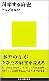
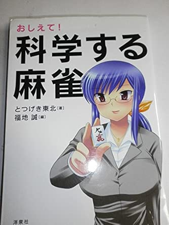
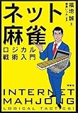
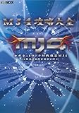

站外推荐资源 这一页整理原站首页侧栏里列出的书单、雀庄、杂志、讲座和线上麻将资源。 麻将书单指南  科学麻将 麻将战术书新时代的里程碑。它基于网络雀庄“东风庄”六万场对局结果，用鲜明的统计分析推导出新的战术，科学地否定了许多旧理论。 查看详情  请教我！科学麻将 在名作《科学麻将》的基础上，删去了编程和公式等对普通读者较难的部分，并加入专栏和对谈，整体更容易阅读。旧书名是《超入门！科学麻将》。 查看详情  网络麻将逻辑战术入门 一位年过四十的麻将作家挑战网络麻将，在与年轻玩家对战的过程中摸索总结出的逻辑型麻将战术。 查看详情  MJ4 攻略大全 SEGA MJ 系列的攻略书。它基于实战数据与高段位玩家做比较分析，而且还收录了《科学麻将》作者突击东北的稿件，也包含三麻资料。 查看详情 雀庄与麻将媒体 雀庄 Iroha 大阪京桥 Grand Chateau 2F 的雀庄主页。 雀庄 Iroha 月刊网络麻将 会整理麻将博客更新和原创专栏的虚拟麻将杂志，其中本站作者 Manboo 的专栏《1 点读的切入法》尤其值得一看。 月刊网络麻将 面向初学者的麻将讲座 如果你觉得本站内容稍微偏难，可以先去看更基础的规则与战术讲解。 麻将规则与役种解说：面向初学者的麻将讲座 网络麻将与免费游戏 网络麻将 JOYJAN 免费公开测试版的在线麻将游戏，简单注册后即可体验网络麻将对战。 JOYJAN 桃色大战派龙 萌系 × 麻将 × 在线 × 免费的代表性网络麻将游戏之一。 桃色大战派龙 麻雀入门 原站首页推荐的新近麻将游戏资源之一。 麻雀入门 彻万女神 Special 原站首页推荐的新近麻将游戏资源之一。 彻万女神 Special 整理自：http://beginners.biz/ 上一页：麻将链接集 下一页：全站目录